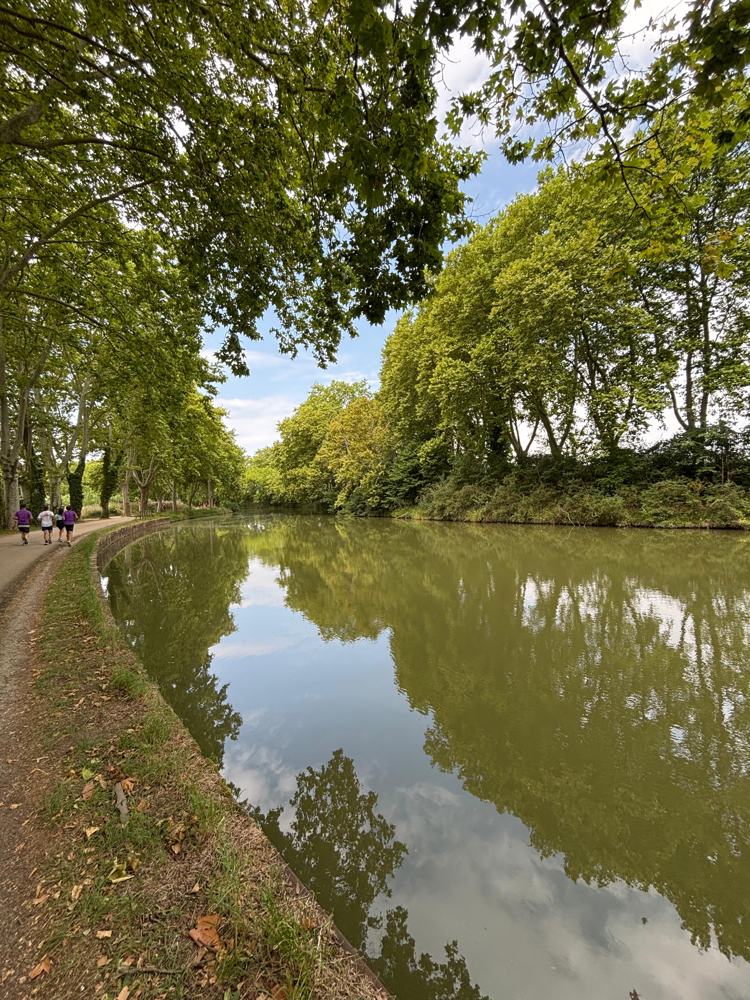
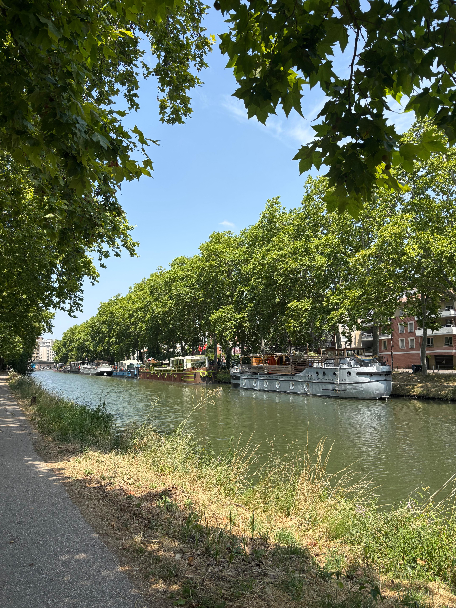
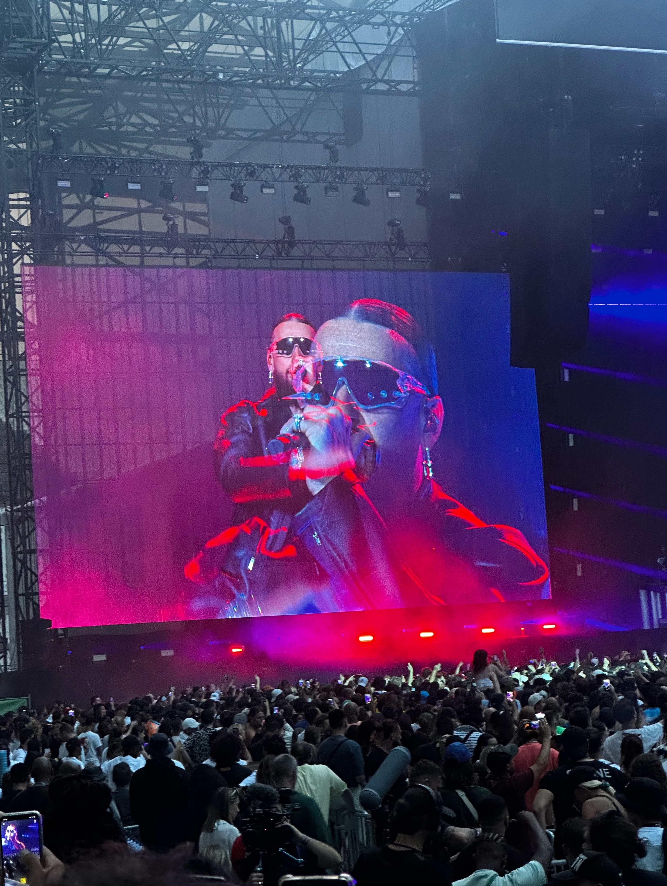

Mes Centres d'intérêt
Sport et Nutrition
Je fais de temps en temps du sport mais faute de motivations, j'abandonne vite fait. A défaut d'aller à la salle pour m'entraîner en raison du prix exorbitant des adhésions, j'achète mes équipements à Décathlon et m'entraîne de temps en temps chez moi quand j'ai la motivation.
Cyclisme et Exploration
Je vous présente deux des photos que j'ai tendance à prendre lors de mes sorties à vélo.


J'aime beaucoup me balader avec mon vélo aux alentours de Toulouse, particulièrement en longeant le Canal du Midi pour me détendre. J'utilise aussi le réseau de trains régionaux pour étendre mes parcours. J'ai déjà fait des sorties à vélo en partant de Montauban à Toulouse avec des amis.
Durant les vacances, lorsque les billets des trains liO sont à un euro, on en profite pour voyager à travers la région Occitanie avec des amis afin de visiter des villages anciens.
Pour mes sorties en vélo, j'utilise parfois l'application Komoot. N'hésitez pas à jeter un œil à mes itinéraires sur mon profil Komoot.
Pratique pour les déplacements : Site de liO Occitanie.
Musique

Je suis un grand passionné de rap français et cela occupe une grande place dans mon quotidien. J'écoute des artistes comme Ninho ou PNL, mais mon rappeur préféré reste SCH, dont j'analyse souvent les textes et la technique.
Récemment, j'ai aussi commencé à écouter du violoncelle et j'ai découvert des artistes qui m'ont beaucoup plu, comme Peter Gregson.
Découvrez l'univers de mon rappeur préféré : Chaîne YouTube de SCH.